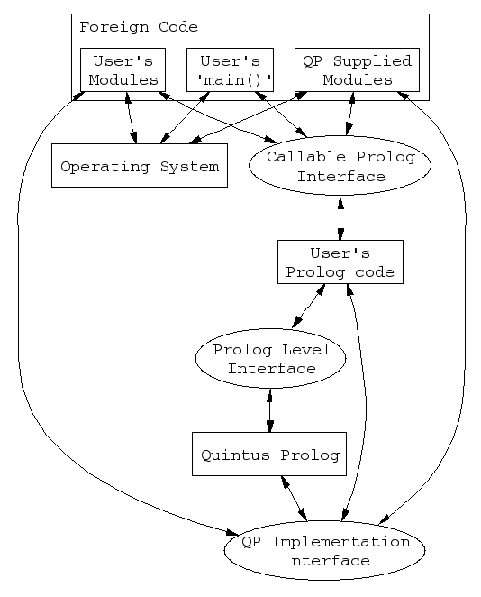

To understand the motivation for the new "embeddability" layer,
contrast the model of foreign language interface that previously
held, as illustrated in the two following figures, with
the new model illustrated in the figure "New Model".
The Old Model:
Under the one-directional foreign language interface, it was necessary
to write a main program in Prolog as illustrated in the above figure
The foreign language interface was able to call
foreign code from this main. There were basically two components,
the Prolog Main, and the Foreign Program. The foreign program itself
could have all sorts of components. However, from the point where the
foreign code began, no more Prolog code could be inserted. For
instance, if you wanted to add a Prolog component to Module C of the
program, it would be necessary to restructure the program to enable
control to return to the Prolog main, where the new Prolog code could be
called, and then reinvoke the foreign code in Module C.
Another limitation of the old foreign interface was the possibility of
conflicts between the foreign code called by the user's Prolog code and the
foreign code used by the Quintus Prolog kernel. For example, the Quintus Prolog kernel
required total control of all memory allocation to ensure that the Prolog
memory areas were contiguous. Therefore the users code could not use
the system call sbrk(2) to allocate memory, but had to use the malloc(3)
function provided with Quintus Prolog (see the following figure).
Now, however, the foreign functions used by the Quintus Prolog kernel forms the
Embedding Layer and it is possible for the user to redefine these
functions to conform to the requirements of his foreign code.
The New Model:
The new model can be represented as in the following figure.
The Embedding Layer contains C functions that establish defaults for
memory management and I/O. The user can redefine any of these modules
so as to prevent conflicts between the application's C calls and the C
calls made by the Quintus Prolog kernel.
